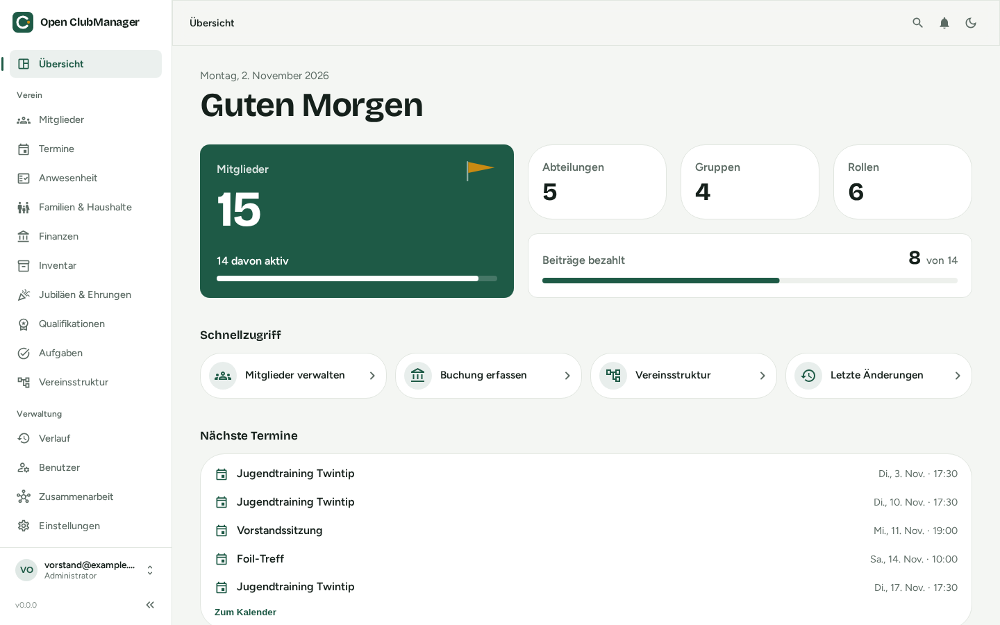

Open ClubManager¶
Die freie Vereinsverwaltung für deinen Computer. Mitglieder, Beiträge, Termine, Anwesenheit und Inventar – ohne Abo, ohne Cloud-Konto, ohne IT-Abteilung.

Noch in Entwicklung
Open ClubManager ist noch nicht in Version 1.0 erschienen. Du kannst alles ausprobieren – verwalte aber noch keine echten Bankdaten damit, bis die erste stabile Version veröffentlicht ist.
Für wen ist Open ClubManager?¶
Für kleine und mittlere Vereine, die heute mit Excel-Listen, Word-Vorlagen und viel Kopfarbeit verwaltet werden: Sportvereine, Musikvereine, Fördervereine, Kulturvereine. Für die Ehrenamtlichen, die die Arbeit machen – Vorstand, Kassenwart, Schriftführung, Übungsleitung.
Was Open ClubManager ist¶
- Ein Programm für deinen Computer (Windows, macOS, Linux). Du installierst es wie jedes andere Programm.
- Kostenlos und quelloffen – dauerhaft, ohne Mitgliederobergrenze.
- Lokal: Die Daten liegen in einer Datei auf deinem Computer. Niemand sonst hat Zugriff.
- Offline-fähig: Internet brauchst du nur, wenn ihr gemeinsam arbeitet.
- Gemeinsam nutzbar: Mehrere Vorstandsmitglieder können zusammenarbeiten. Die Daten werden verschlüsselt über einen Ordner ausgetauscht, den euer Verein schon hat (Nextcloud, OneDrive, Dropbox, Google Drive, Netzlaufwerk). Mehr dazu unter Zusammenarbeit.
Was Open ClubManager nicht ist¶
- Keine Web-Anwendung. Es gibt keine Internetseite zum Einloggen und keine Handy-App. Open ClubManager läuft nur als installiertes Programm.
- Kein Mitgliederportal. Mitglieder melden sich nicht selbst an und pflegen ihre Daten nicht selbst.
- Keine Buchhaltung fürs Finanzamt. Das Kassenbuch hilft bei Beiträgen und Ein-/Ausgaben, ersetzt aber keine doppelte Buchführung und keinen Steuerberater.
- Kein Newsletter- oder Chat-Programm. Listen und Kalender kannst du exportieren und mit deinen gewohnten Programmen weiterverwenden.
- Keine Software für Großverbände mit vielen Untervereinen.
Vorteile und Nachteile auf einen Blick¶
- Keine laufenden Kosten, kein Abo
- Keine Technik zu betreiben – kein Server, keine Datenbank
- Deine Daten bleiben bei dir; Cloud-Ordner sehen nur verschlüsselte Daten
- Funktioniert ohne Internet, z. B. in der Turnhalle
- Zugriffsrechte sind technisch abgesichert: Wer keine Bankdaten sehen darf, bekommt sie gar nicht erst
- Keine Abhängigkeit: Die Daten sind eine offene SQLite-Datei und lassen sich jederzeit exportieren
- Jede Person im Vorstand muss das Programm auf ihrem Gerät installieren und aktuell halten
- Kein Zugriff vom Handy oder aus dem Browser
- Mitglieder können ihre Daten nicht selbst pflegen
- Beim gemeinsamen Arbeiten kommen Änderungen anderer mit kurzer Verzögerung an
- Um Datensicherungen musst du dich selbst kümmern
- Für die Zusammenarbeit gibt es einen Notfallschlüssel, der sicher aufbewahrt werden muss
So geht es weiter¶
- Installieren – Programm herunterladen und starten
- Einrichten – Admin-Konto anlegen, Beispieldaten ausprobieren
- Mitglieder – das Herzstück
- Von Excel umsteigen – vorhandene Listen übernehmen